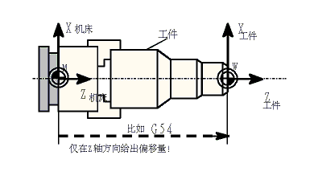

| 坐标系 |
绝对和相对坐标: G90/G91 |
1. 功能
G90和G91指令分别对应着绝对坐标和相对坐标。G90/G91适用于所有坐标轴。
在坐标不同于G90/G91的设置时，可以在程序段中通过AC/IC以绝对坐标/相对坐标方式进行。这两个指令不决定到达终点位置的轨迹，轨迹由G功能组中的其它G功能指令决定。
2. 编程
G90 绝对坐标
G91 相对坐标
X=AC（…） 以绝对坐标输入，程序单段有效
X=IC（…） 以相对坐标输入，程序单段有效
绝对坐标 G90:
在绝对坐标中取决于当前坐标系(工件坐标系或机床坐标系) 的零点位置。零点偏置有以下几种情况：可编程零点偏置，可设定零点偏置或者没有零点偏置。
程序启动后G90适用于所有坐标轴，并且一直有效，直到在后面的程序段中由G91 (相对坐标) 替代为止(模态有效)。
相对坐标 G91:
在相对坐标中, 尺寸表示待运行的轴位移。移动的方向G91由符号决定。
G91适用于所有坐标轴，并且可以在后面的程序段中由G90 (绝对坐标) 替换。 用AC=（…），=（…） 赋值时必须要有一个等于符号。数值要写在圆括号内，定义圆心坐标也可以绝对坐标用AC=（…）定义。
3. G90和G91编程举例
N10 G90 X20 Z90 ；绝对坐标
N20 X75 Z-32 ；仍然是绝对坐标
…
N180 G91 X40 Z20 ；转换为相对坐标
N190 X-12 Z17 ；仍然是相对坐标
可编程的零点偏置：TRANS/ATRANS |
1. 功能
如果工件在不同的位置重复出现的形状或结构；或者选用了一个新的参考点，在这种情况下就需要使用可编程零点偏置。由此就产生一个当前工件坐标系，新输入的数值均是在该坐标系中的数值。可以在所有坐标轴中进行零点偏移。
2. 编程
TRANS X… Z… ；可设置的偏移，
清除所有有关偏移、旋转、比例系数、镜像的指令
ATRANS X… Z… ；可设置的偏移,附加于当前的指令。
TRANS：不带数值清除所有有关偏移、旋转、比例系数、镜像的指令。
TRANS/ ATRANS指令要求一个独立的程序段。
3. 编程举例
N20 TRANS X20 Z15… ；可设置零点偏移
N30 L10 ；子程序调用，其中包含待偏移的几何量
…
N70 TRANS ；取消偏移
…
工件装夹-可设定的零点偏置:G54～G59/G500/G53/G153 |
1. 功能
可设定的零点偏置给出工件零点在机床坐标系中的位置(工件零点以机床零点为基准偏移)。当工件装夹到机床上后求出偏移量，并通过操作面板输入到规定的数据区。程序可以通过选择相应的G功能G54～G59激活此值。
2. 编程
G54 第一可设定零点偏置
G55 第二可设定零点偏置
G56 第三可设定零点偏置
G57 第四可设定零点偏置
G58 第五可设定零点偏置
G59 第六可设定零点偏置
G500 取消可设定零点偏置---模态有效
G53 取消可设定零点偏置---程序段方式有效， 可设置的零点偏置也一起取消。
G153 如同G53，取消附加的基本框架。
